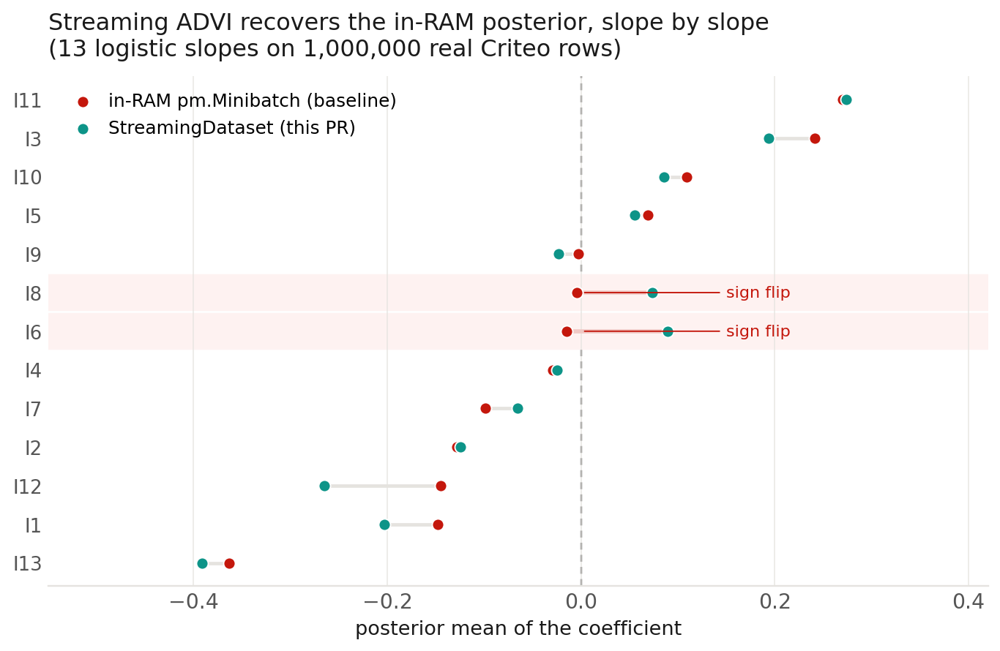

Last week the streaming code was a validated prototype on my laptop. This week I turned it into pull requests — three of them — and walked through them with my mentors.
The three PRs
I split the work into three.
#8325 is the data layer
— IterableDataset, parquet_source,
DataLoader, shuffle_buffer — the part that reads
Parquet shards off disk, re-batches them, and shuffles.
#8333 is the
Trainer, stacked on top: it owns the fitting loop and feeds each
minibatch into the model itself, so there are no callbacks for the user to wire
up. #888 is the
example notebook that puts the two together end to end. I split the loader off
from the trainer on purpose — it is self-contained and does not depend on
how inference runs, so it can be reviewed on its own.
Polishing the code
A good chunk of the week was cleaning the PRs up from the first round of comments.
The tests now describe themselves with docstrings instead of inline comments, the
decorative banners are gone, and the public names mirror PyTorch's
torch.utils.data — DataLoader,
IterableDataset, shuffle — so the API is
recognizable from the first line instead of being something new to learn. None of
it changes behaviour; it just makes the code much easier to read.
A benchmark anyone can rerun
Last week's Criteo memory result was real, but you had to take my word for it — I had run it on a slice I prepped myself. So this week I added a download script that pulls the slice straight from the public Hugging Face dataset, so anyone can reproduce the whole run from scratch instead of trusting my numbers. The posterior check still holds: on a million real rows, streaming ADVI recovers the same coefficients as an ordinary in-memory fit, slope for slope.

pm.Minibatch (red) vs the streaming DataLoader (teal).
Most pin to within ~0.05; the largest gap is 0.12 (I12), and the correlation
across all 14 coefficients is 0.998. The two highlighted slopes (I6, I8) sit
within noise of zero, so two independent stochastic ADVI runs can even flip their
sign — that is the ambiguity of a near-zero coefficient, not a streaming
bug. The intercept (−3.59 vs −3.60) is off-scale and agrees to 0.01.
What's next
Next is the deeper review round and finishing the test coverage on the data loader. More soon.
Links. DataLoader PR #8325 · Trainer PR #8333 · Example PR #888 · Criteo 1TB Click Logs · Mentors @zaxtax · @fonnesbeck